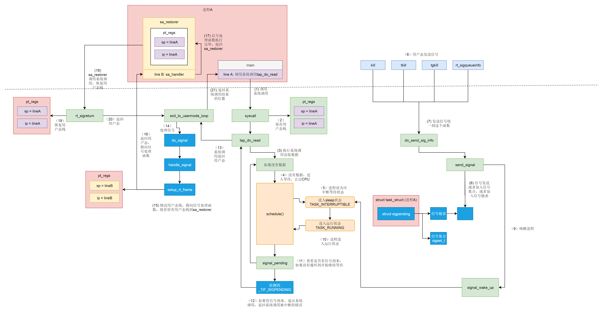

进程间通信¶
进程之间的地址空间相互独立，要实现进程间的通信，需要特殊的机制。
管道¶
下面的语句创建两个进程，并用管道把这两个进程连接在一起。
第一个进程的标准输出被重定向到管道中，第二个进程从这个管道读取输入。
通过管道传递的数据是顺序的，也就是读和写的顺序一致。从管道中读取数据是一次性操作，读完了空间就被释放了。
上面这种管道由于没有名字，又叫做匿名管道。
匿名管道的创建需要经过以下这个函数：

fd[0]代表管道的读端，fd[1]代表管道的写端。
匿名管道可以用于父子进程之间的通信，fork()函数创建的子进程会复制父进程的文件描述符，这样每个进程就都有fd[0]和fd[1]两个文件描述符。由于管道只能一端读，一端写，所以我们可以：
- 父进程关闭fd[0]，只保留fd[1]
- 子进程关闭fd[1]，只保留fd[0]
这样父子进程就可以通过匿名管道通信了。

还有一种管道叫有名管道。它以一种特殊的文件形式存放在文件系统中，这样两个没有亲缘关系的进程都可以通过访问这个特殊文件的方式来进行通信。
创建有名管道需要用到这个函数：
Note
对于有名管道的读、写操作都会阻塞进程。
不论是匿名管道还是有名管道，其数据都存放在内存中，遵循先进先出的原则。
消息队列¶
消息队列的通讯方式就像邮件，发送数据时，会分成一个个独立的数据单元，也就是消息体，每个消息体都是固定大小的存储块，在字节流上不连续。消息体的定义如下：
使用消息队列前需要先调用ftok()函数，该函数会根据文件的inode生成一个唯一的key。只要在这个消息队列的生命周期内，这个文件不被删除，那么无论什么时刻，再调用ftok，也会得到同样的key。这种key的使用方式在其他System V IPC进程间通信机制体系中也适用。
常用函数：
| 函数名 | 说明 |
|---|---|
| msgget | 创建或访问一个消息队列 |
| msgsnd | 发送一个消息 |
| msgrcv | 接收一个消息 |
| msgctl | 控制消息队列 |
共享内存¶
共享内存是一种高效的通信方式，允许多个进程直接访问同一块内存空间。
常用函数：
| 函数名 | 说明 |
|---|---|
| shmget | 创建或访问一块共享内存 |
| shmat | 将共享内存连接到当前进程的地址空间 |
| shmdt | 将共享内存从当前进程的地址空间断开 |
| shmctl | 控制共享内存 |
信号量¶
与内核同步机制中的信号量类似，System V IPC机制中的信号量也是用于进程间同步的。它能确保多个进程对共享资源的访问，防止并发访问时的数据不一致的情况。
常用函数：
| 函数名 | 说明 |
|---|---|
| semget | 创建或访问一个信号量 |
| semop | 对信号量进行操作 |
| semctl | 控制信号量 |
信号¶
信号的机制与硬件中断非常相似，都是异步地发送一个请求，区别在于中断处理函数是在内核态，而信号处理函数是在用户态。信号可以在任何时刻发送给任何一个进程。
在Linux系统中，为了响应各种事件定义了非常多的信号。比如当我们发送kill -9 ${pid}时，其实就是发送SIGKILL信号给指定进程，将它杀死。我们可以通过kill -l命令查看所有的信号：
# kill -l
1) SIGHUP 2) SIGINT 3) SIGQUIT 4) SIGILL 5) SIGTRAP
6) SIGABRT 7) SIGBUS 8) SIGFPE 9) SIGKILL 10) SIGUSR1
11) SIGSEGV 12) SIGUSR2 13) SIGPIPE 14) SIGALRM 15) SIGTERM
16) SIGSTKFLT 17) SIGCHLD 18) SIGCONT 19) SIGSTOP 20) SIGTSTP
21) SIGTTIN 22) SIGTTOU 23) SIGURG 24) SIGXCPU 25) SIGXFSZ
26) SIGVTALRM 27) SIGPROF 28) SIGWINCH 29) SIGIO 30) SIGPWR
31) SIGSYS 34) SIGRTMIN 35) SIGRTMIN+1 36) SIGRTMIN+2 37) SIGRTMIN+3
38) SIGRTMIN+4 39) SIGRTMIN+5 40) SIGRTMIN+6 41) SIGRTMIN+7 42) SIGRTMIN+8
43) SIGRTMIN+9 44) SIGRTMIN+10 45) SIGRTMIN+11 46) SIGRTMIN+12 47) SIGRTMIN+13
48) SIGRTMIN+14 49) SIGRTMIN+15 50) SIGRTMAX-14 51) SIGRTMAX-13 52) SIGRTMAX-12
53) SIGRTMAX-11 54) SIGRTMAX-10 55) SIGRTMAX-9 56) SIGRTMAX-8 57) SIGRTMAX-7
58) SIGRTMAX-6 59) SIGRTMAX-5 60) SIGRTMAX-4 61) SIGRTMAX-3 62) SIGRTMAX-2
63) SIGRTMAX-1 64) SIGRTMAX
每个信号都有一个唯一的ID和其默认的操作：
Signal Value Action Comment
──────────────────────────────────────────────────────────────────────
SIGHUP 1 Term Hangup detected on controlling terminal
or death of controlling process
SIGINT 2 Term Interrupt from keyboard
SIGQUIT 3 Core Quit from keyboard
SIGILL 4 Core Illegal Instruction
SIGABRT 6 Core Abort signal from abort(3)
SIGFPE 8 Core Floating point exception
SIGKILL 9 Term Kill signal
SIGSEGV 11 Core Invalid memory reference
SIGPIPE 13 Term Broken pipe: write to pipe with no
readers
SIGALRM 14 Term Timer signal from alarm(2)
SIGTERM 15 Term Termination signal
SIGUSR1 30,10,16 Term User-defined signal 1
SIGUSR2 31,12,17 Term User-defined signal 2
...
进程对信号的处理方式有三种：
- 执行默认操作。
- 执行自定义信号处理函数。
- 忽略信号。注意，SIGKILL和SIGSTOP无法忽略。
Linux推荐使用sigaction()函数来自定义信号处理函数。它的定义如下：
而sigaction结构体的定义如下：
struct sigaction {
__sighandler_t sa_handler;
unsigned long sa_flags;
__sigrestore_t sa_restorer;
sigset_t sa_mask;
};
其中sa_handler就是你要定义的信号处理函数。
发送信号由两种方式，一种是发送给整个线程组的，还有一种是发送给某个单独线程的。信号分为不可靠信号和可靠信号。在task_struct中有一个结构体sigpending，它的定义如下：
对于不可靠信号，也就是编号小于32的信号，会放在sigset_t signal集合中，不论发送多少次，在被处理前都只会保留一份。所以不可靠信号会造成信号的丢失。对于可靠信号，则会挂在struct sigpending结构体中的链表里挨个处理。
一旦信号挂到了task_struct结构体中，就会设置一个TIF_SIGPENDING标志位，表示有信号等待处理。然后在系统调用结束，或者中断处理结束，都会检查这个标志位。如果设置了，就会调用do_signal()函数来处理信号。
static void exit_to_usermode_loop(struct pt_regs *regs, u32 cached_flags)
{
while (true) {
......
if (cached_flags & _TIF_NEED_RESCHED)
schedule();
......
/* deal with pending signal delivery */
if (cached_flags & _TIF_SIGPENDING)
do_signal(regs);
......
if (!(cached_flags & EXIT_TO_USERMODE_LOOP_FLAGS))
break;
}
}
信号处理流程如下图所示：
